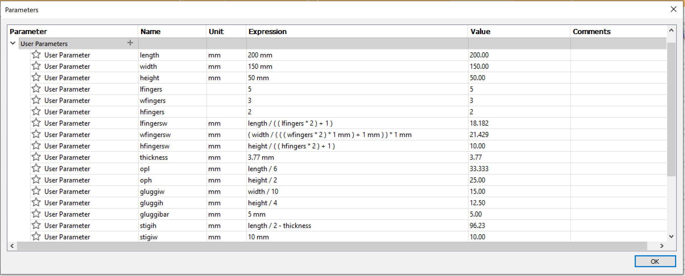
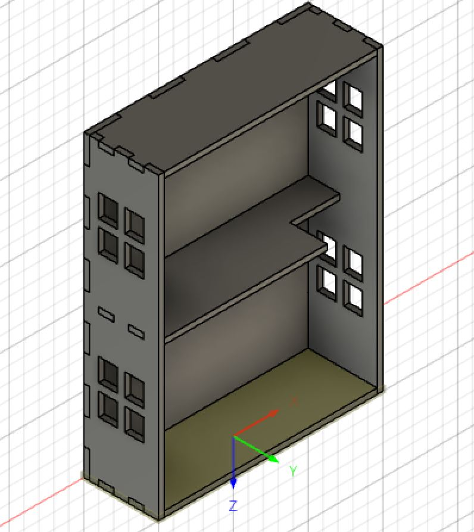
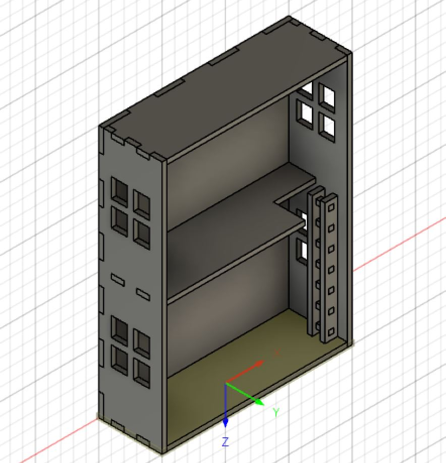
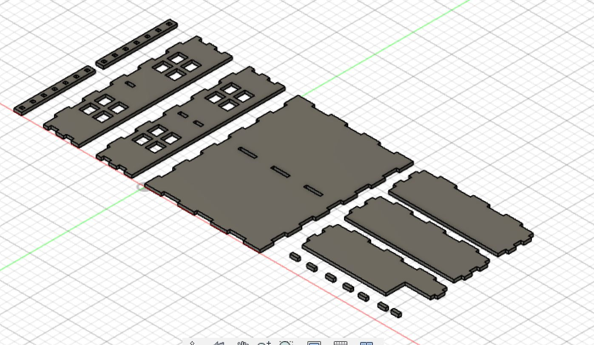
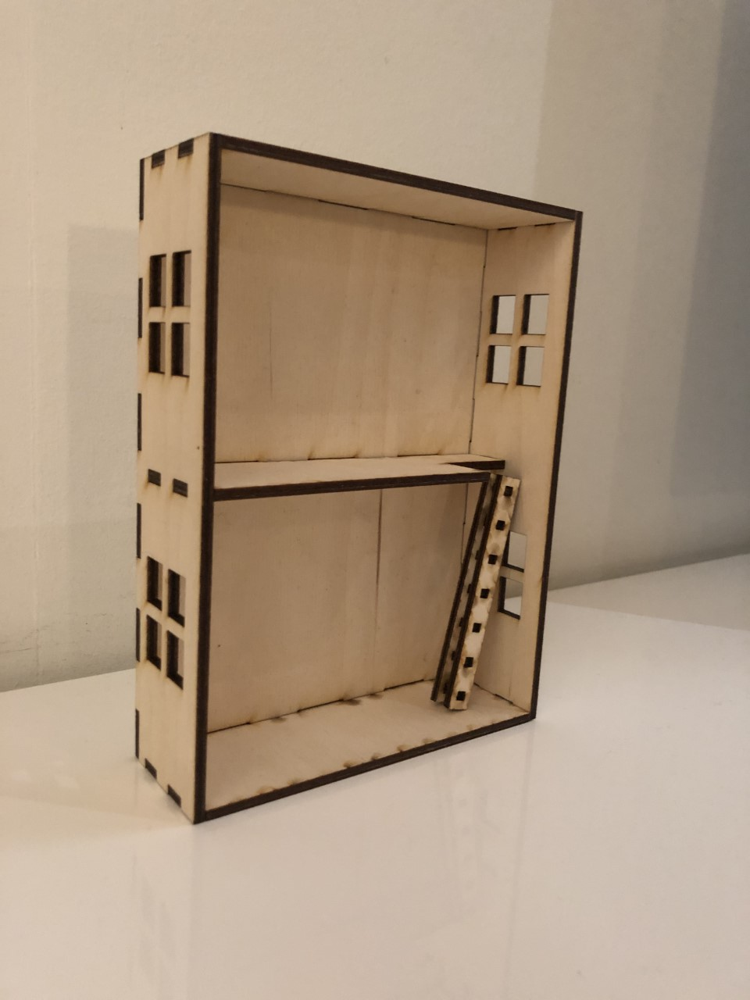

Verkefni 2
Tölvustuddur skurður

Markmið verkefnisins var að hanna parametrískt, geirneglt módel af byggingar einingum. Módelið þarf að vera skalanlegt þannig að hægt sé að stilla kerf og efnisþykkt ásamt stærðum á flötum, með því að vinna með parametrískar breytur. Fyrst þegar verkefnið var sett fyrir ákvað ég að búa til koll fyrir fæturnar mínar undir skrifborðið mitt. Þegar ég fór svo að teikna hann upp í Fusion360 komst ég að því að til að kollurinn myndi virka þyrfti hann að vera það stór að ég þyrfti að kaup nokkrar plötur og verkefnið innihélt ekki mikið pressfit. Ég ákvað því að breyta um verkefnið og smíða dúkkuhús. Húsið er ætlað litlu frænku minni og frænda sem koma reglulega í heimsökn og þurfa eitthvað skemmtilegt dót heima hjá ömmu og afa. Húsið er á tveimur hæðum og er stigi á milli hæðanna. Húsið er í raun opinn kassi með plötu í miðjum kassanum og gluggum á hliðunum.
Þegar kom að því að teikna dúkkuhúsið upp var það gert í Fusion 360. Ég fylgdi leibeininga myndbandi sem kennari setti með verkefninu fyrir það að teikna upp kassa. Allar stærðir voru settar upp sem parameters til að geta breytt stærð á húsinu eftir á. Ég byrjaði á því að teikna upp bakhliðina. Ég teiknaði ferhyrning með lengd og breidd eftir parameters. Ég extrudeaði svo ferhyrninginn um þykktina í parameters. Ég teiknaði svo ferhyrning á hliðina að stærð tannanna, setti hann á réttan stað með hjálp parameter stærðanna og extruda tönninni inn um þykkt. Ég vel svo Rectangular Pattern og extrudea með því restinni af tönnunum. Ég teiknaði svo upp hliðina þar sem ég var að gera tennurnar, extrudea hliðinni og klippi út tennurnar á nýju hliðina. Ég extrudeaði svo þeirri hlið yfir á hina hliðina og klippti ut tennur hinum megin. Ég gerði svo það sama fyrir þakið, gólfið og mið hæðina.
Þegar umgjörðin var komin var komið að því að gera glugga á húsið. Ég teiknaði 4 kassa á eina hliðina, copy-aði svo teikninguna á efri hæðina og extrudeaði svo í gegnum hliðina. Ég extrudeaði þeim svo yfir á hina hliðina og var þá komin með fjóra glugga. Næst teiknaði ég ferhyrning á miðhæðina og extrudeaði hann í gegnum hæðina, fyrir stigann. Næst kom að því að teikna stigann. Ég teiknaði eina hliðina, gerði göt í hana með sömu aðferð og ég gerði tennurnar. Ég gerði svo þrepin með því að teikna kassa í gatið, extrudea og svo framlengja með sömu aðferð og ég gerði tennurnar. Ég extrudeaði svo hlið stigans frá einda þrepanna og var þá komin með báðar hliðar stigans og öll þrep.
Næst var komið að því að gera ráð fyrir kerfinu. Til að byrja með reyndi ég að fletja húsið út og bæta kerfinu við, en það gekk ekki vel. Ég bjó til nýtt model til að fletja húsið út í. Þegar ég ætlaði að fletja húsið út komst ég að því að ég hafði búið til part en ekki component svo ég þurfti að breyta öllum parts í component áður en ég gat byrjað að fletja út. Þegar ég var komin með components í nýja modelið þá byrjaði ég að fletja út. Ég sá hinsvegar að þegar ég ætlaði að skoða modelið með 3D myndinni sá ég að ef ég hreyfði hluti í flata modelinu hreyfði ég hluti í 3D modelinu. Ég skildi ekki hvað var í gangi og gekk ekki vel með þetta svo ég ákvað ég að reyna aðra aðferð þar sem ég gat fengið feedback frá vinkonu minni sem gerði þetta með þeirri aðferð. Á mynd hér að neðan má sjá húsið flatt út.
Þegar það gekk ekki að fletja út ákvað ég að að búa til setup og búa til profile fyrir hvert yfirborð. Það gekk vel að búa til setup og profiles, ég fylgdi leibeiningum úr myndbandi frá kennara. Ég setti kerfið 0.193 en sú tala fékkst úr kerf prófi sem ég gerði með Söru Ísey. Þegar ég hafði búið til profile fyrir öll yfirborð þurfti ég að post processa. Það hinsvegar reyndist hægara sagt en gert. Ég downloadaði Autodesk DXF Post Processor úr myndbandinu en mér gekk illa að nálgast það í fusion hjá mér. Ég setti það inn í Cam folder en fann það ekki í möppunni í post processor. Ég endaði á því að downloada honum aftur og setja hann aftur í Cam folder og þá virkaði þetta loksins hjá mér. Ég lét post processorinn svo setja þetta í 2D, only cutting og mismunandi layera.

Ég opnaði þetta svo í Inkscape, raðaði hlutnum upp og sameinaði nodes og exportaði svo sem pdf. Ég fór með skjalið í laser skerann, setti hann í gang og ekkert gerðist. Ég fattaði þá að ég hafði gleymt að stilla línuþykktina. Ég fór því til baka í inkscape, stillti línuþykktina, exportaði sem pdf og fór aftur í laser skerann, Rey. Rey skar dúkkuhúsið út, ég ætlaði að taka mynd af ferlinu en gleymdi símanum mínum frammi og gat ekki farið frá skeranum á meðan hann var í gangi svo við verðum að láta ímyndunaraflið duga hér. Þegar búið var að skera allt út, tók ég alla hlutina út og setti dúkkuhúsið saman. Það passaði vel saman en ég þurfti aðeins að lemja það saman til að fá það til að passa fullkomlega. Húsið kom mjög vel út og það verður gaman fyrir afa og ömmu börnin þegar þau koma næst í heimsókn.
Hönnun og teikning á verkefninu tók ca. 3 klst, stilling á kerf tók ca. 1,5 klst og skurður tók nokkrar mínútur. Samsetning tók einnig nokkrar mínútur.